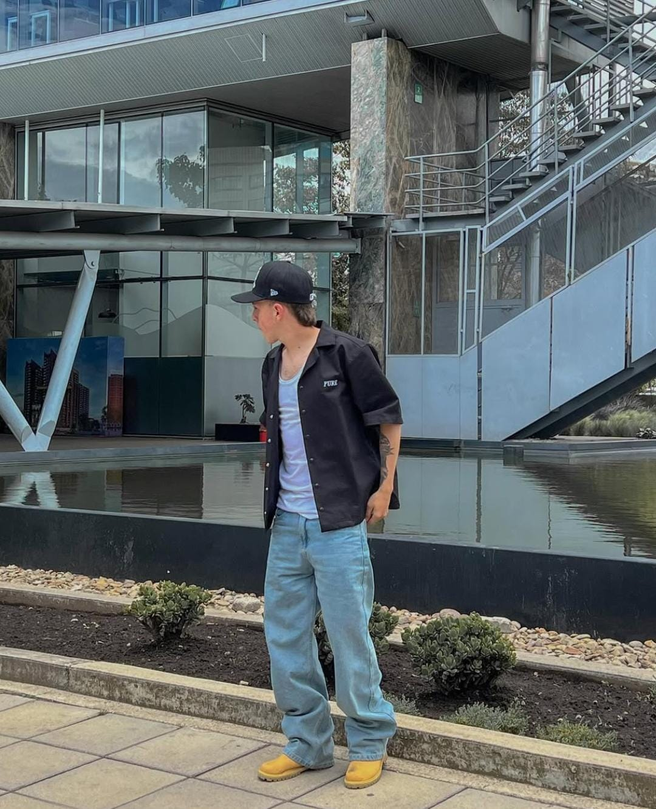

Para este cuerpo debes evitar usar prendas muy ajustadas ya que resaltaran tu delgadez y te haran ver mas alto de lo normal.
Mejor opta por usar prendas anchas u oversize, por tu gran altura no afectara mucho estatura.
En este cuerpo tambien debes evitar usar prendas ajustadas, evita usar prendas exageradamente anchas "oversize" ya que te veras mas bajo de lo normal.
Se recomienda usar prendas un poco anchas pero no tan exageradas como las oversize, o tambien cortes rectos. Observa el siguiente video para notar la diferencia.
Para este cuerpo debes tener cuidado, no uses prendas ajustadas ya que por tu estatura y delgadez pareceras un niño, no uses prendas oversize (En especial en la parte superior) porque afectaran mucho a tu estatuta. Opta por usar cortes rectos o pantalones anchos en la parte inferior y en la parte superior prendas ajustadas o si quieres algo mas ancho puedes usar cortes boxi fit, para aumentar un poco mas tu estatura opta por usar zapatos que tengan plataforma.
Evita usar ropa ajustada en la parte inferior, resaltaran tus musculos pero no se vera estetico.
Usa prendas oversize abajo y arriba, si prefieres que se note tu musculatura puedes usar prendas de tu talla o soleras (Solo en la parte superior)
De la misma forma evita usar prendas ajustadas
Para camuflarte un poco puedes usar prensas oversize arriba y abajo, tambien aplica para una persona de Estatura Normal Y Robusta.
Este es uno de los cuerpos mas dificiles para vestir pero no imposible, evita a toda costa usar ropa ajustada.
Puedes usar una prenda oversize abajo y arriba una prenda ancha corte boxi fit.